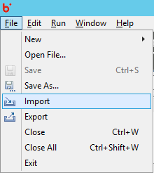
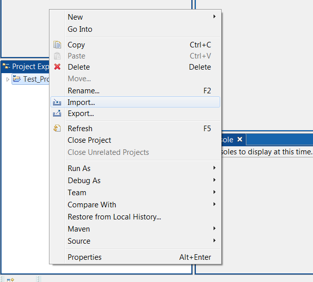
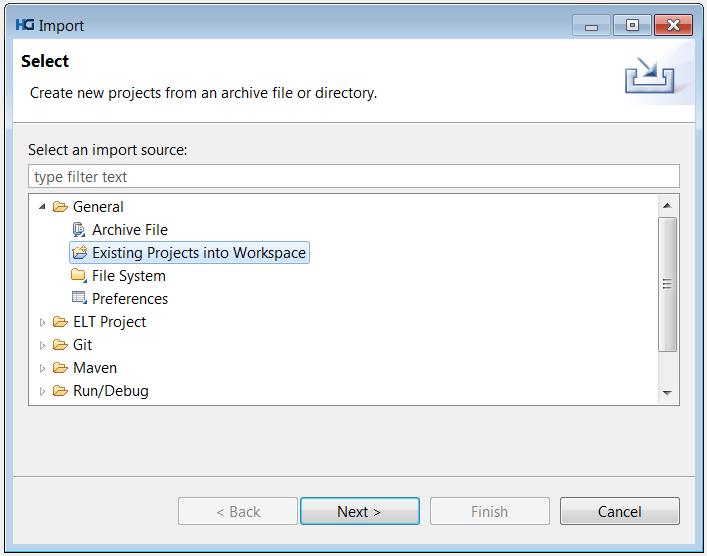
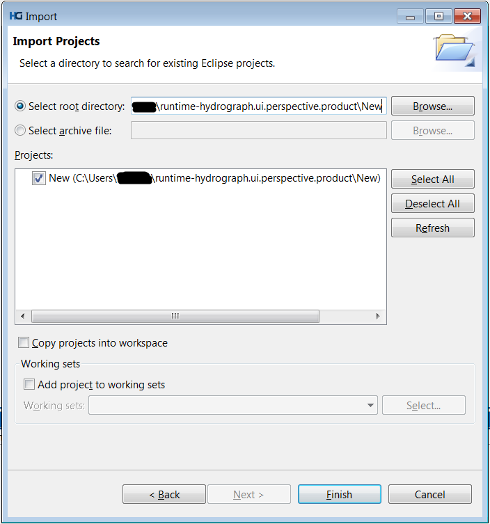
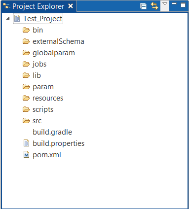

How to Import a Project/Files from File System
To Import Project from File system, users have been provided with options in the File menu -> Import

Users can alternatively Right click on Project Explorer -> Import.

The Import option opens up an Import wizard with default folder list displayed by Hydrograph. To import existing projects, expand the General folder -> Existing Projects into Workspace -> Next

Click browse button to select the folder containing existing projects and then select the projects that need to be imported into workspace.

Finish will import the projects and those will be visible in the project explorer
